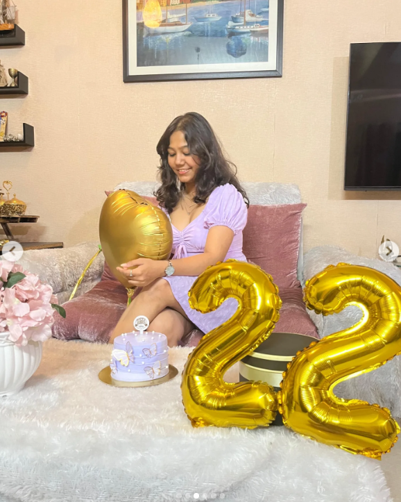

THE BIRTHDAY EDIT · ARTICLES 1–100
Make your birthday plan your own.
Start with the part you are figuring out today. These 100 guides cover practical choices—from the first plan to outfits, cake, food, photos, and hosting—so you can celebrate at home or wherever suits you.

Open the birthday post on Instagram ↗See the birthday post on Instagram ↗Planning and timing
ARTICLE 001How to Plan a Birthday Celebration from Start to FinishA clear planning order for choosing the date, guest count, setting, budget, theme, food, and setup for a birthday celebration.
ARTICLE 002A Six-Week Birthday Party Planning TimelineA week-by-week birthday party timeline for booking a setting, sending invitations, arranging food and cake, shopping, and preparing the room.
ARTICLE 003A Two-Week Birthday Party ChecklistA focused fourteen-day checklist for confirming RSVPs, food, cake, supplies, helpers, and the final birthday party setup.
ARTICLE 004The Day-Before Birthday Party ChecklistA practical day-before checklist for the birthday room, table layout, food storage, decorations, supplies, helpers, and guest reminders.
ARTICLE 005A Calm Birthday Party-Day ScheduleA flexible birthday party run-of-show covering setup, guest arrivals, food, photos, cake, music, and cleanup with time to enjoy the day.
ARTICLE 006How to Set a Birthday Party BudgetSet a birthday spending limit, separate costs into categories, reserve a contingency, and track estimates against actual spending.
ARTICLE 007Where to Spend and Save on Birthday DecorationsChoose one birthday decor focal point to prioritize, reuse simple items elsewhere, and keep the setup balanced for guests and photos.
ARTICLE 008How to Choose a Guest Count That Fits Your SpaceMatch the birthday guest list to the room by checking usable floor space, seating, walkways, food setup, and planned activities.
ARTICLE 009How to Pick a Birthday Date and TimeChoose a birthday party date and time by weighing guest schedules, event style, travel, venue access, food timing, and daylight.
ARTICLE 010How to Make a Birthday Guest List Feel ThoughtfulBuild a birthday guest list around the person being celebrated, the space, the event style, and the mix of people who will feel welcome.
ARTICLE 011How to Track Birthday RSVPs Without StressA single RSVP list helps you make reliable choices about seats, food, and timing. Use one response channel, set a clear reply-by date, and follow up once with guests who have not answered.
ARTICLE 012What to Put on a Birthday InvitationA helpful birthday invitation answers the practical questions before guests need to ask: when, where, how to reply, what to expect, and how to ask about access needs.
ARTICLE 013Birthday Invitation Wording for Different Party StylesBirthday invitation wording should sound like the host and make the plan unmistakable. Keep the greeting warm, then place the date, time, location, reply route, and logistics in a separate block.
ARTICLE 014How to Choose a Birthday Theme That Feels PersonalA personal birthday theme starts with one meaningful detail—a favorite color, outfit, hobby, place, or shared memory—and uses it consistently without turning the room into a costume set.
ARTICLE 015How to Build a Simple Birthday Mood BoardA birthday mood board is a small decision tool: collect a few references for outfit, cake, decor, light, and photos, then keep only the ideas that work together and fit the venue.
ARTICLE 016How to Plan a Birthday Party When You Are BusyWhen time is short, make the decisions that affect other people first: date, guest count, venue, and food. Simplify the details that are easy to change, and delegate tasks with a clear owner.
ARTICLE 017How to Divide Party Tasks Among Friends or FamilyParty help works best when every task has one owner, a clear deadline, and a simple definition of done. Assign setup, food, music, photos, welcoming, and cleanup before the event day.
ARTICLE 018How to Create a Backup Plan for a Birthday PartyA useful backup plan names the risk, the trigger for changing course, and the next workable option. Prepare for weather, late deliveries, a missing helper, or a change in guest count.
ARTICLE 019A Birthday Party Setup Checklist for First-Time HostsA first-time host can reduce stress by planning how guests move through the space: where they arrive, sit, eat, take photos, and find the restroom. Prepare the practical basics before decorative extras.
ARTICLE 020How to Keep a Birthday Plan FlexibleKeep decisions that affect bookings and guests firm; leave adjustable details such as decor quantities, food portions, and the exact schedule open until you have better information.
Venue and room setup
ARTICLE 021Should You Celebrate at Home or at a Venue?Compare the real trade-offs between celebrating at home and booking a venue, then choose the setting that fits your guests, schedule, and energy.
ARTICLE 022Questions to Ask Before Booking a Birthday VenueUse this venue checklist to compare capacity, access, setup time, included furniture, rules, accessibility, and the full booking terms.
ARTICLE 023How to Plan a Birthday Celebration in a Living RoomTurn a living room into a comfortable birthday gathering space with a clear focal point, open paths, conversation seating, and practical food zones.
ARTICLE 024Birthday Layout Ideas for a Small ApartmentCreate compact, easy-to-navigate zones for guests, food, seating, coats, and photos without making a small apartment feel crowded.
ARTICLE 025How to Host a Birthday in a Shared HomeAgree on guest areas, timing, noise, shared costs, privacy, and cleanup with housemates before sending birthday invitations.
ARTICLE 026How to Arrange Seating for a Birthday GatheringChoose a seating layout that matches the food and activities, leaves walkways open, and offers flexible places to sit and talk.
ARTICLE 027How to Create a Birthday Photo Corner at HomeSet up a simple home photo corner with a clean background, soft light, enough standing room, and a safe route for guests.
ARTICLE 028How to Set Up a Birthday Cake TableArrange the birthday cake, candles, plates, and serving tools on a stable table that is easy to see and photograph.
ARTICLE 029How to Make a Birthday Space Feel Welcoming at the EntranceHelp guests feel at ease as soon as they arrive with a visible welcome, a place for bags or gifts, and an obvious route into the celebration.
ARTICLE 030How to Plan an Outdoor Birthday with a Weather BackupPlan shade, wind protection, food storage, seating, restrooms, and a specific weather fallback before inviting guests to an outdoor birthday.
Outfit and personal style
ARTICLE 031How to Choose a Birthday Outfit That Feels Like YouChoose for personal style and comfort first, then account for the venue, activity, weather, and how long you will wear the outfit.
ARTICLE 032How to Match a Birthday Outfit to the Party ColorsUse a party color as a small outfit accent or create a deliberate contrast while keeping the palette comfortable and photo-friendly.
ARTICLE 033What to Wear to a Birthday Party at HomeChoose a celebratory home-party outfit that works for sitting, greeting guests, moving around, and helping with simple hosting tasks.
ARTICLE 034What to Wear to a Birthday Dinner or VenueUse the invitation, restaurant or event-space formality, time, and planned activity to decide how dressed up to be.
ARTICLE 035How to Choose Shoes You Can Celebrate InTest fit and stability, account for the floor surface and standing time, and bring a comfortable change if dancing is planned.
ARTICLE 036How to Style a Lilac Birthday DressUse the lilac dress in Shanaya’s birthday post as a color reference and explore soft neutrals, metallics, and restrained contrasts.
ARTICLE 037How to Accessorize a Birthday Outfit Without Overdoing ItPick one focal accessory and let jewelry, bag, and shoes support the outfit instead of competing with it.
ARTICLE 038Birthday Outfit Ideas for a Dance-Friendly CelebrationChoose breathable or stretch materials and secure fits that allow movement, with footwear suited to the floor and dancing duration.
ARTICLE 039How to Plan a Birthday Outfit for Changing WeatherUse a removable layer, comfortable shoe option, and practical outerwear that works indoors and outdoors and can appear in photos.
ARTICLE 040How to Rewear a Birthday Outfit After the CelebrationRestyle a statement item by changing shoes, layers, accessories, or styling so a celebration purchase remains useful afterward.
Cake and dessert
ARTICLE 041How to Choose a Birthday Cake for Your Guest CountEstimate the cake size from the guest count, serving style, and whether other desserts are available. Treat serving charts as a starting point and confirm the portions with your baker.
ARTICLE 042How to Pick a Birthday Cake Flavor Guests Will EnjoyChoose the birthday person’s favorite first, then consider the menu, season, guest preferences, and whether a second option would help.
ARTICLE 043How to Choose Cake Colors That Match the PartyUse one or two shades from the outfit or decor as inspiration, then check how frosting and edible colors will look together. Choose only decorations intended to be eaten.
ARTICLE 044Small Birthday Cake Ideas for an Intimate CelebrationFor a small gathering, consider a compact layer cake, a mini decorated cake, or a small centerpiece cake with extra portions of another dessert.
ARTICLE 045Birthday Cake Alternatives for Guests Who Prefer Something ElseOffer a dessert the birthday person wants, such as cupcakes, brownies, pie, or fruit, and consider keeping a small cake if the candle moment matters.
ARTICLE 046How to Order a Custom Birthday CakeGive the baker the date, guest count, flavor, design reference, wording, dietary needs, pickup time, and transport plan. Confirm the details and price in writing.
ARTICLE 047How to Decorate a Simple Birthday Cake at HomeChill the cake, apply a crumb coat, smooth a simple frosting finish, and add one or two decorations. Practice unfamiliar techniques before the celebration.
ARTICLE 048How to Display a Birthday Cake for Better PhotosPlace the cake on a stable table or stand, face it toward soft light, clear distracting objects from the frame, and leave room for candles and serving.
ARTICLE 049How to Transport a Birthday Cake SafelyKeep the cake level, cool, and secured; use a fitted box on a flat surface, minimize the trip, and follow the baker’s handling advice.
ARTICLE 050How to Serve Birthday Cake Neatly to a GroupPrepare a stable cutting surface, a sharp knife, plates, napkins, and a clear serving order. Choose slice sizes that fit the cake and the rest of the dessert menu.
Decorations and color
ARTICLE 051How to Choose a Birthday Color PaletteChoose a small birthday palette from a meaningful anchor color, then use it consistently across the outfit, cake, and room.
ARTICLE 052How to Decorate with Number BalloonsUse number balloons as one clear birthday focal point, with safe anchoring, sensible placement, and enough space for people and photos.
ARTICLE 053How to Use Heart-Shaped Balloons as a Birthday AccentStyle a heart-shaped birthday balloon as a single accent, pairing it with a simple palette, secure weight, and clear photo space.
ARTICLE 054How to Make a Balloon Focal Point Without Filling the RoomCreate a birthday balloon focal point with a compact cluster, a clear background, and open space for guests, serving, and photos.
ARTICLE 055How to Decorate a Birthday Table on a Small BudgetStyle a birthday table with a simple cloth, a stable cake stand, a few coordinated pieces, and reusable items from home.
ARTICLE 056How to Use Flowers in Birthday DecorAdd flowers to birthday decor by choosing a scale that suits the table, keeping sightlines open, and placing arrangements safely.
ARTICLE 057How to Make a Birthday Backdrop from Items You Already OwnCreate a simple birthday photo backdrop with a clean wall, fabric or bedsheet, household light, and a few personal details.
ARTICLE 058DIY Birthday Banner Ideas That Look PersonalMake a birthday banner that feels personal with a short message, clear lettering, coordinated colors, and planned hanging points.
ARTICLE 059How to Reuse Birthday DecorationsChoose birthday decorations that can be stored and used again, then label and organize them so they are easy to find for another celebration.
ARTICLE 060How to Keep Birthday Decor from Looking ClutteredCreate a calmer birthday setup by choosing one focal point, leaving open space, varying height carefully, and keeping surfaces usable.
Food and drinks
ARTICLE 061How to Plan a Birthday Menu Around the Party ScheduleChoose the birthday menu around the start time, event length, and what guests will reasonably expect. Tell guests whether the plan includes a meal or light snacks, then schedule serving so food fits the activities.
ARTICLE 062How to Set Up a Birthday Snack Table Guests Can NavigateA snack table works best when guests can approach, understand the choices, serve themselves, and step away without blocking the room. Separate the queue from drinks and leave space for refills.
ARTICLE 063Easy Birthday Party Appetizers to Prepare AheadMake-ahead appetizers keep the host available during the celebration. Choose recipes that hold well, separate prep tasks from last-minute finishing, and confirm safe storage and serving instructions.
ARTICLE 064How to Plan Birthday Food for Different Dietary NeedsPlan food inclusively by asking guests about dietary needs early, confirming ingredients with whoever prepared each dish, labeling clearly, and reducing cross-contact at the table.
ARTICLE 065How to Keep a Birthday Buffet OrganizedAn organized buffet gives each guest a clear serving path, keeps drinks and queues from colliding, and lets the host refill smaller platters without interrupting the celebration.
ARTICLE 066How Much Food Should You Prepare for a Birthday Party?Food quantities depend on guest count, event length, meal timing, menu variety, and whether the food replaces a meal. Treat calculators and per-person guides as starting estimates, not guarantees.
ARTICLE 067Birthday Drink Station Ideas for All AgesA well-placed drink station keeps water and alcohol-free choices easy to find without creating a second queue beside the food. Label drinks, keep cups within reach, and plan ice and refills.
ARTICLE 068How to Coordinate Cake and Other DessertsTreat the cake as the main dessert or one option among several, then size the rest of the dessert table around guest count, serving style, and the moment you want to create.
ARTICLE 069How to Make Party Food Look Good in PhotosParty food photographs look more inviting when the serving area is tidy, light is soft, and labels are readable. Photograph the table before guests arrive, then return to the celebration instead of staging every plate.
ARTICLE 070A Birthday Food Shopping List You Can CustomizeA useful birthday food shopping list separates ingredients, drinks, serving supplies, dietary options, and last-minute perishables. Build it from the menu and confirmed guest count so the list reflects the actual event.
Photos and memories
ARTICLE 071A Birthday Photo Checklist for the HostA simple shot list for the room, outfit, cake, arrivals, group portraits, candid moments, and the people closest to the birthday person.
ARTICLE 072How to Take Birthday Photos on a PhoneUse a clean lens, available light, steady framing, and a mix of wide and close photos to tell the story of a birthday gathering.
ARTICLE 073How to Photograph a Birthday Cake Before It Is CutCapture the whole cake, its small decorative details, and the first slice before the serving area becomes busy.
ARTICLE 074How to Pose Naturally in Birthday PhotosUse comfortable posture, small actions, and simple hand placements to make birthday portraits feel relaxed rather than staged.
ARTICLE 075How to Take Group Birthday Photos Without StressChoose a photo spot early, gather people with a helper, keep faces visible, and take several quick frames.
ARTICLE 076How to Make a Birthday Photo Shot ListTurn the key people and moments into a short photo plan that lets the host enjoy the celebration too.
ARTICLE 077How to Use Natural Light for Birthday PortraitsFind soft window light or open shade, position the subject comfortably, and check both the face and background before taking portraits.
ARTICLE 078How to Create an Instagram Birthday CarouselPlan a clear sequence of birthday photos, add context to the caption, and review Instagram’s current posting options before publishing.
ARTICLE 079How to Turn a Birthday Celebration into a Short ReelPlan a few short clips—setup, outfit, cake, candles, and a closing moment—then edit them into a clear mini-story.
ARTICLE 080How to Ask Guests Before Posting Their PhotosMake photo sharing comfortable by asking before posting identifiable guests, explaining where images may appear, and respecting a no-photo request.
Music, dancing, and activities
ARTICLE 081How to Build a Birthday Playlist for Different Energy LevelsBuild a birthday playlist that welcomes guests, grows into the celebration, and winds down naturally.
ARTICLE 082How to Plan a Birthday Dance MomentPlan an optional birthday dance moment with a comfortable space, a meaningful song, and a low-pressure invitation.
ARTICLE 083Birthday Activities for Guests Who Do Not Know Each OtherUse optional shared activities and gentle conversation prompts to help birthday guests meet without forced introductions.
ARTICLE 084Low-Pressure Birthday Games for Adults and TeensChoose short birthday games that guests can join or leave easily, with seated and low-movement options.
ARTICLE 085How to Plan a Birthday Karaoke SessionPlan karaoke with a tested setup, a fair song queue, varied choices, and room for guests to pass.
ARTICLE 086How to Create a Birthday Memory TableSet up a simple birthday memory table for guest notes, photos, and messages the honoree can keep.
ARTICLE 087How to Plan a Birthday Movie NightPlan a comfortable birthday movie night by choosing a film, testing the screen and sound, arranging seats, and preparing snacks.
ARTICLE 088How to Add a Creative Activity to a Birthday GatheringAdd a short, optional creative station to a birthday gathering with simple supplies and room for different skill levels.
ARTICLE 089How to Balance Music and Conversation at a Birthday PartyKeep birthday music lively without making conversation difficult by setting volume for the room and adjusting it as activities change.
ARTICLE 090How to Make a Birthday Celebration Enjoyable for IntrovertsMake a birthday gathering welcoming for different social styles with a clear plan, optional activities, quiet seating, and easy breaks.
Inclusive and thoughtful hosting
ARTICLE 091How to Make a Birthday Celebration More AccessiblePlan a birthday that is easier to navigate and enjoy by checking routes, seating, restrooms, sound, lighting, and event information with guests.
ARTICLE 092How to Plan a Birthday for Guests with Different Energy NeedsPlan a birthday with active and quiet ways to join, flexible timing, comfortable seats, and breaks guests can take without explanation.
ARTICLE 093How to Make a Birthday Party Comfortable for Guests of Different AgesPlan a mixed-age birthday with a few shared moments, comfortable seating, clear directions, and optional activities for different interests and energy levels.
ARTICLE 094How to Make a Birthday Party Welcoming Without a Strict Dress CodeDescribe the birthday setting, activities, and practical clothing needs so guests can choose an outfit that feels comfortable without a rigid dress code.
ARTICLE 095How to Keep Birthday Decorations Safe and StableKeep birthday decor attractive while protecting exits, walkways, candles, electrical fixtures, and guests from unstable stands, cords, and balloons.
ARTICLE 096How to Plan a Lower-Waste Birthday CelebrationReduce birthday-party waste by reusing decorations and tableware, planning food around attendance, and checking local collection rules before buying disposables.
ARTICLE 097How to Make Birthday Invitations Clear About Accessibility and LogisticsMake birthday invitations useful with clear timing, arrival instructions, transport notes, verified access details, and a private way to ask questions.
ARTICLE 098How to Handle Birthday Party Cleanup EfficientlyMake after-party cleanup manageable with clear waste and dish stations, a safe leftover plan, and a few helpers assigned before guests arrive.
ARTICLE 099How to Thank Guests After a Birthday CelebrationSend a warm, specific thank-you after your birthday celebration. Choose a message or card that fits the guest, and mention their company, help, or gift.
ARTICLE 100How to Save the Best Birthday Memories After the PartyKeep a small, meaningful record of a birthday with selected photos, guest notes, the playlist, and a backup that will be easy to find later.
See the moment behind the ideas
Visit Shanaya’s Instagram for the original birthday post and more lifestyle, fashion, and dance moments.
 Open the birthday post on Instagram ↗Open the birthday post ↗
Open the birthday post on Instagram ↗Open the birthday post ↗